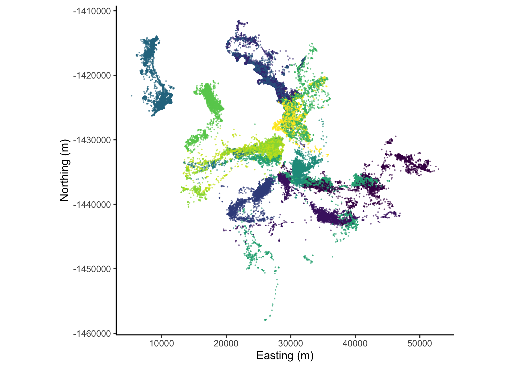
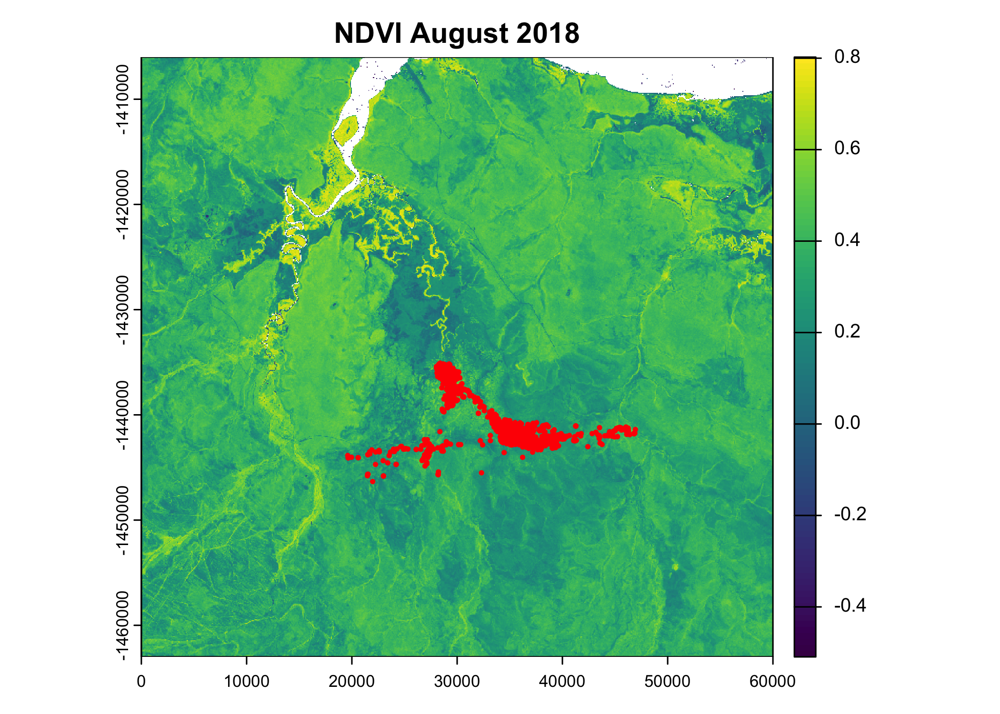
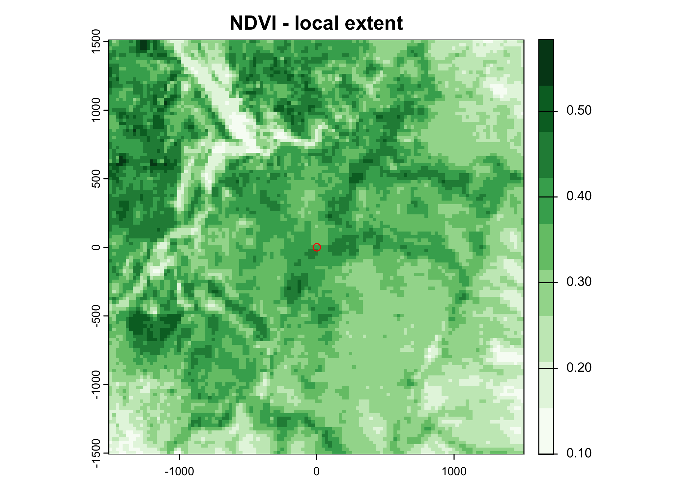
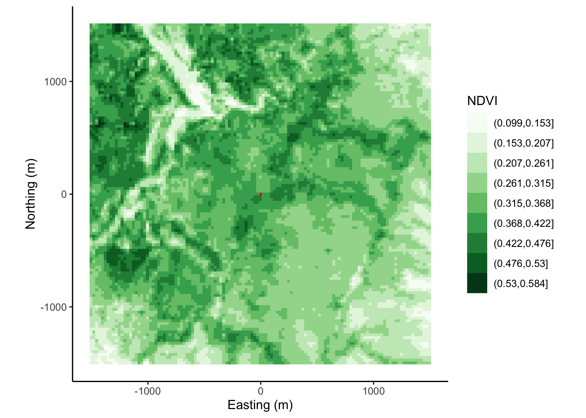
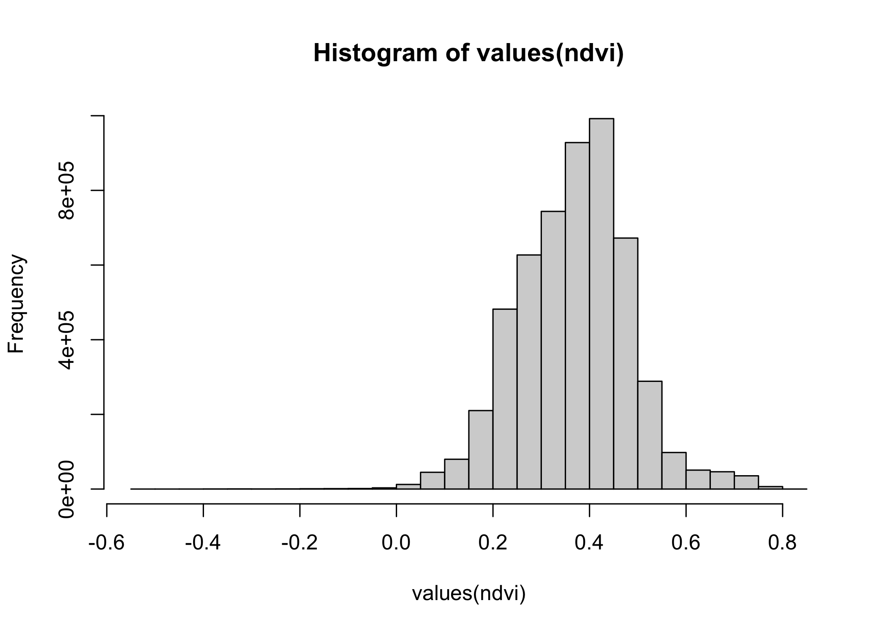
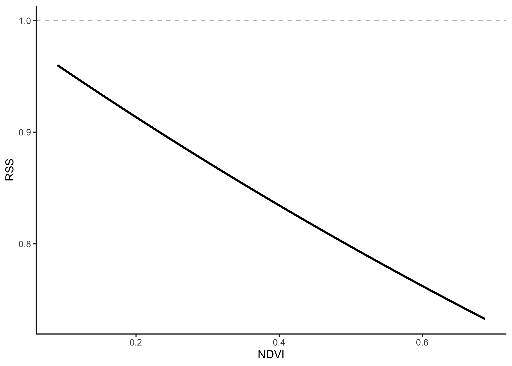
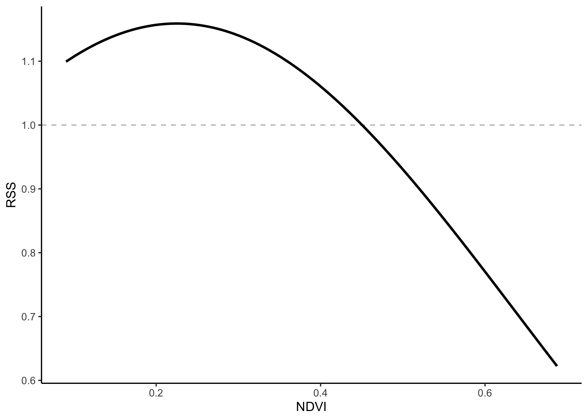
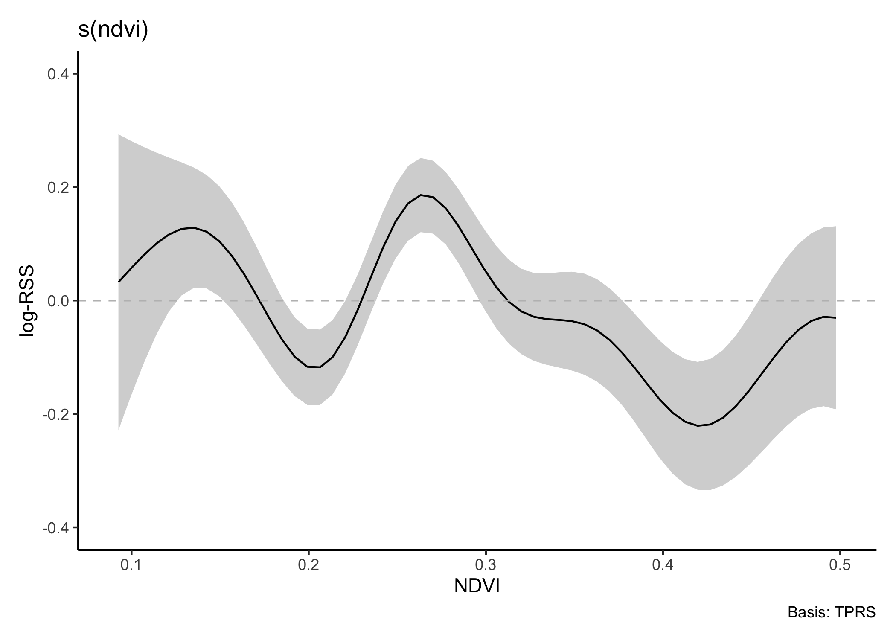
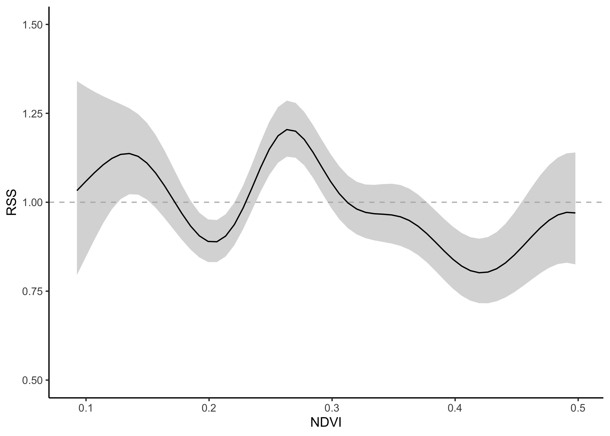

SSF responses
In this script we demonstrate different approaches to including covariates in an SSF model.
Load required packages
Import data and clean
New names:
Rows: 133161 Columns: 11
── Column specification
──────────────────────────────────────────────────────── Delimiter: "," chr
(2): node, dates dbl (7): ...1, lat, lon, height, accuracy, heading, speed dttm
(2): timestamp, DateTime
ℹ Use `spec()` to retrieve the full column specification for this data. ℹ
Specify the column types or set `show_col_types = FALSE` to quiet this message.
• `` -> `...1`Code
# remove individuals that have poor data quality or less than about 3 months of data.
# The "2014.GPS_COMPACT copy.csv" string is a duplicate of ID 2024, so we exclude it
buffalo_data <- buffalo_data %>% filter(!node %in% c("2014.GPS_COMPACT copy.csv",
2029, 2043, 2265, 2284, 2346))
buffalo_data <- buffalo_data %>%
group_by(node) %>%
arrange(DateTime, .by_group = T) %>%
distinct(DateTime, .keep_all = T) %>%
arrange(node) %>%
mutate(ID = node)
buffalo_clean <- buffalo_data[, c(12, 2, 4, 3)]
colnames(buffalo_clean) <- c("id", "time", "lon", "lat")
attr(buffalo_clean$time, "tzone") <- "Australia/Queensland"
head(buffalo_clean)[1] "Australia/Queensland"Create a step object
Use the amt package to create a trajectory object from the cleaned data.
Plot the data spatially
Code

Pick out a single individual
Import spatial covariate
Although NDVI changes over time, and we have access to monthly layers, we will just select a single month here.
Code

class : SpatRaster
dimensions : 2280, 2400, 1 (nrow, ncol, nlyr)
resolution : 25, 25 (x, y)
extent : 0, 60000, -1463000, -1406000 (xmin, xmax, ymin, ymax)
coord. ref. : GDA94 / Geoscience Australia Lambert (EPSG:3112)
source : ndvi_aug_2018.tif
name : ndvi
min value : -0.5441047
max value : 0.8086554 Select local extent
We just want to look at an area centred on a single location, which might be combined with our movement probability surface to generate a next-step probability surface.
We’ll centre the extent on an interesting looking part of the landscape, and then buffer it by 1500m, which contains most of the step lengths, and therefore most of the movement kernel.
Code
buffalo_single_point <- buffalo_id %>%
filter(t_ == min(t_)) # select the first time point
buffer <- 1512.5 # buffer in metres
window_extent <- ext(buffalo_single_point$x_ - buffer,
buffalo_single_point$x_ + buffer,
buffalo_single_point$y_ - buffer,
buffalo_single_point$y_ + buffer)
ndvi_window <- crop(ndvi, window_extent)
# set the extent to 0 at the buffalo location
ndvi_window <- shift(ndvi_window,
dx = -buffalo_single_point$x_,
dy = -buffalo_single_point$y_)
# plot the NDVI layer with the buffalo location as the centre point
plot(ndvi_window, main = "NDVI - local extent",
col = brewer.pal(9, "Greens"))
points(x = 0, y = 0, col = "red")
Code
# create a NDVI df to plot with ggplot
ndvi_df <- as.data.frame(ndvi_window, xy = TRUE)
ggplot() +
geom_raster(data = ndvi_df, aes(x = x, y = y, fill = as.factor(cut(ndvi, breaks = 9)))) +
scale_fill_brewer(palette = "Greens", direction = 1) +
coord_fixed() +
geom_point(aes(x = 0, y = 0),
colour = "red", size = 0.5) +
labs(x = "Easting (m)", y = "Northing (m)", fill = "NDVI") +
theme_classic()
Sample random steps to fit models
Code
[1] 0.3452605[1] 1023.96[1] 0.0483029Circular Data:
Type = angles
Units = radians
Template = none
Modulo = asis
Zero = 0
Rotation = counter
[1] 0Different SSF formulations
Firstly, we want to pull out the range of NDVI values to plot the curves with.

Code
1% 99%
0.09036818 0.68761911 Linear covariate
Model formula
\(y \sim ndvi\)
Fit model
Code
Call:
coxph(formula = Surv(rep(1, 72270L), case_) ~ ndvi + sl_ + log_sl +
cos_ta + strata(step_id_), data = data, method = "exact")
n= 72270, number of events= 6570
coef exp(coef) se(coef) z Pr(>|z|)
ndvi -4.525e-01 6.361e-01 2.081e-01 -2.174 0.0297 *
sl_ 1.161e-05 1.000e+00 2.496e-05 0.465 0.6418
log_sl 8.098e-04 1.001e+00 5.191e-03 0.156 0.8760
cos_ta -1.292e-02 9.872e-01 1.827e-02 -0.707 0.4794
---
Signif. codes: 0 '***' 0.001 '**' 0.01 '*' 0.05 '.' 0.1 ' ' 1
exp(coef) exp(-coef) lower .95 upper .95
ndvi 0.6361 1.5722 0.4230 0.9565
sl_ 1.0000 1.0000 1.0000 1.0001
log_sl 1.0008 0.9992 0.9907 1.0110
cos_ta 0.9872 1.0130 0.9524 1.0231
Concordance= 0.502 (se = 0.004 )
Likelihood ratio test= 5.59 on 4 df, p=0.2
Wald test = 5.6 on 4 df, p=0.2
Score (logrank) test = 5.6 on 4 df, p=0.2Response curve
Code
# extract the NDVI coefficient
ndvi_coef <- ssf_linear$model$coefficients[1]
# calculate the RSS for each NDVI value
ndvi_coef_df <- data.frame(ndvi_values,
"log_rss" = ndvi_values * ndvi_coef,
"rss" = exp(ndvi_values * ndvi_coef))
# plot the response curve
ggplot() +
geom_hline(yintercept = 1, linetype = "dashed", colour = "grey") +
geom_line(data = ndvi_coef_df, aes(x = ndvi_values, y = rss),
colour = "black", size = 1) +
labs(x = "NDVI", y = "RSS") +
theme_classic() Warning: Using `size` aesthetic for lines was deprecated in ggplot2 3.4.0.
ℹ Please use `linewidth` instead.
Plot habitat selection
Quadratic covariate
Model formula
\(y \sim ndvi + ndvi^2\)
Fit model
Code
Call:
coxph(formula = Surv(rep(1, 72270L), case_) ~ ndvi + I(ndvi^2) +
sl_ + log_sl + cos_ta + strata(step_id_), data = data, method = "exact")
n= 72270, number of events= 6570
coef exp(coef) se(coef) z Pr(>|z|)
ndvi 1.310e+00 3.708e+00 9.293e-01 1.410 0.1585
I(ndvi^2) -2.909e+00 5.453e-02 1.496e+00 -1.945 0.0518 .
sl_ 1.086e-05 1.000e+00 2.497e-05 0.435 0.6635
log_sl 8.897e-04 1.001e+00 5.192e-03 0.171 0.8639
cos_ta -1.289e-02 9.872e-01 1.827e-02 -0.706 0.4803
---
Signif. codes: 0 '***' 0.001 '**' 0.01 '*' 0.05 '.' 0.1 ' ' 1
exp(coef) exp(-coef) lower .95 upper .95
ndvi 3.70795 0.2697 0.599987 22.915
I(ndvi^2) 0.05453 18.3387 0.002907 1.023
sl_ 1.00001 1.0000 0.999962 1.000
log_sl 1.00089 0.9991 0.990757 1.011
cos_ta 0.98719 1.0130 0.952465 1.023
Concordance= 0.508 (se = 0.004 )
Likelihood ratio test= 9.42 on 5 df, p=0.09
Wald test = 9.27 on 5 df, p=0.1
Score (logrank) test = 9.27 on 5 df, p=0.1Response curve
Code
# extract the NDVI coefficient
ndvi_coef <- ssf_quadratic$model$coefficients[1]
ndvi_coef_sq <- ssf_quadratic$model$coefficients[2]
log_rss = (ndvi_values * ndvi_coef) + (ndvi_values^2 * ndvi_coef_sq)
rss = exp(log_rss)
# calculate the RSS for each NDVI value
ndvi_coef_df <- data.frame(ndvi_values, log_rss, rss)
# plot the response curve
ggplot() +
geom_hline(yintercept = 1, linetype = "dashed", colour = "grey") +
geom_line(data = ndvi_coef_df, aes(x = ndvi_values, y = rss),
colour = "black", size = 1) +
labs(x = "NDVI", y = "RSS") +
theme_classic() 
Plot habitat selection
Smooth term
Fit a GAM to the data, with a smooth term across the range of NDVI values (Klappstein et al. 2024).
Model formula
\(y \sim s(ndvi)\)
Fit model
Code
# create a dummy variable create a dummy column for times (used in a Cox PH model, but not relevant to an SSF) that all contain the same value.
buffalo_ssf_data$times <- 1 # dummy time variable
# fit an issf model
ssf_gam <- mgcv::gam(cbind(times, step_id_) ~
# s(ndvi, bs = "tp", k = 10) +
s(ndvi) +
sl_ + log_sl + cos_ta,
data = buffalo_ssf_data,
family = cox.ph,
weight = case_)
summary(ssf_gam)
Family: Cox PH
Link function: identity
Formula:
cbind(times, step_id_) ~ s(ndvi) + sl_ + log_sl + cos_ta
Parametric coefficients:
Estimate Std. Error z value Pr(>|z|)
sl_ 1.065e-05 2.500e-05 0.426 0.670
log_sl 2.152e-03 5.208e-03 0.413 0.680
cos_ta -1.357e-02 1.827e-02 -0.743 0.458
Approximate significance of smooth terms:
edf Ref.df Chi.sq p-value
s(ndvi) 7.825 8.577 64.73 <2e-16 ***
---
Signif. codes: 0 '***' 0.001 '**' 0.01 '*' 0.05 '.' 0.1 ' ' 1
Deviance explained = 0.114%
-REML = 15754 Scale est. = 1 n = 72270Response curve
Code
Warning: Removed 42 rows containing missing values or values outside the scale range
(`geom_line()`).
Code
ggplot(data = gam_smooths) +
geom_hline(yintercept = 1, linetype = "dashed", colour = "grey") +
geom_ribbon(aes(x = ndvi, ymin = exp(.estimate - 1.96 * .se), ymax = exp(.estimate + 1.96 * .se)),
fill = "grey70", alpha = 0.5) +
geom_line(aes(x = ndvi, y = exp(.estimate)),
colour = "black") +
labs(x = "NDVI", y = "RSS") +
scale_x_continuous(limits = c(ndvi_quantiles[1], 0.5)) +
scale_y_continuous(limits = c(0.5, 1.5)) +
theme_classic() Warning: Removed 42 rows containing missing values or values outside the scale range
(`geom_line()`).